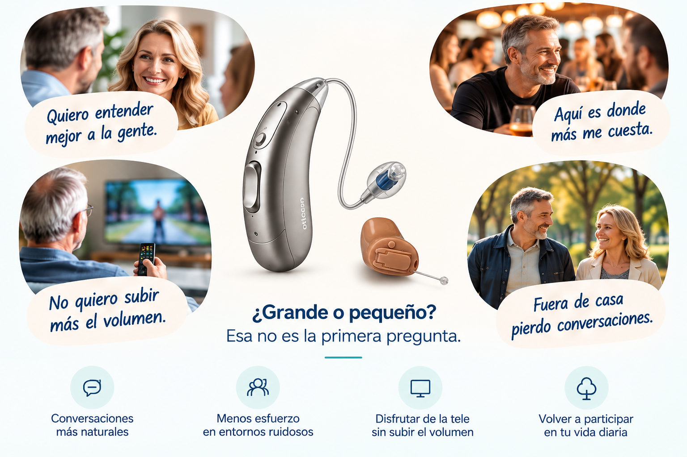

Trato cercano y profesional
Escucho tu caso, resolvemos tus dudas y te acompaño en todo el proceso.
Primero hay que saber dónde necesitas oír mejor.
Después hablamos de audífonos.

Soy Antonio Cuesta, audioprotesista con más de 30 años de experiencia. Mi trabajo no es vender audífonos, sino ayudarte a encontrar la mejor solución para ti, con independencia de la marca o el precio.
Antonio CuestaEscucho tu caso, resolvemos tus dudas y te acompaño en todo el proceso.
Trabajo con diferentes marcas y gamas. Mi recomendación se basa en lo que necesitas, no en lo que me interesa vender.
Analizamos tus necesidades en casa, en la calle, con la familia, en entornos ruidosos... para que vuelvas a disfrutar.
“No se trata solo de oír sonidos,
sino de no perderte lo importante.”
Cuéntame qué te está costando oír y en qué situaciones.
Realizo las pruebas necesarias para entender tu caso.
Te muestro las soluciones que mejor se adaptan a tus necesidades.
Probamos, ajustamos y resolvemos tus dudas.
Sin prisas. Con toda la información.
Cuéntame dónde vives y qué te está costando oír.
Estaré encantado de ayudarte.